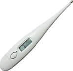
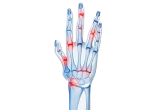
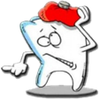
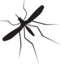
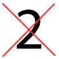

בן חרצית - Tanacetum parthenium
מוצא הצמח הוא בדרום מזרח אירופה. כיום הוא נפוץ בכל רחבי אירופה, צפון אמריקה ואוסטרליה, אך הוא כבר נפוץ בכל העולם. בן חרצית הוא צמח רב שנתי קצר הפורח בין יולי לאוקטובר, ומפיק ריח חזק ומר. העלים הצהובים הירוקים שלו מתחלפים, וגדלים על שני צידי הגזע לסירוגין. הפרחים הצהובים הקטנים מסודרים באשכול קטום צפוף.
סגולות הצמח ושימושים רפואיים
-
הורדת חום וטיפול במיגרנות וכאבי ראש:
כאבים הנגרמים מכיווץ ומיד לאחר מכן הרפיה של עורקים בבסיס הגולגולת. בזכות החומרים הפעילים שבו, הצמח מרחיב את כלי הדם באזור המצח וכך מקל באופן משמעותי על מגרנות קשות ותורם בהורדת חום. - מחזור חודשי:
הצמח מטפל בתסמונת קדם וסתית, כאבי מחזור, דימום המאופיין בקרישים או דימום מועט. מקל בכאבים הנובעים מהמחזור החודשי, ואף תורם להסדרתו. -
משכך כאבים ותומך במערכת העצבים:
בן חרצית תורם להקלה בכאבים שונים כגון כאבי פנים, אוזניים, שרירים תפוסים - טיפול בדלקות מפרקים:
מחקרים רבים הוכיחו כי טיפול באמצעות בן חרצית הוא יעיל ביותר לסובלים מדלקות מפרקים. - טיפול באלרגיות:
בן חרצית מטפל ומונע אלרגיות שונות בחלקי הגוף. - מקל בהופעת וורטיגו
-
מסייע בלידה קשה
-
כאבי שיניים:
הצמח מקל על כאבים ודלקות בשיניים. גם לאחר עקירת שן רצוי לבצע שטיפות פה עם מי הצמח. -
עקיצות חרקים:
תמיסה עשויה מבן חרצית מהול בכוס מים קרים, הנמרחת על אזורים כואבים ונפוחים בגוף, כתוצאה מעקיצות חרקים ושרצים מסייעת להקלה. - בעיות מעיים:
בן חרצית יעיל לטיפול בגזים, כאבי בטן, נפיחויות ותסמונת המעי הרגיז
אופן השימוש בצמח
מינון
- קפסולות: 200-250 גרם ליום.
- עלים טריים: 1-3 עלים ליום בלעיסה.
- חליטה: 2 כפיות לכוס, שלוש פעמים ביום.
- אבקה של עלים מיובשים: כפית אחת ליום.
הכנת חליטה בייתית
יש להשרות את כמות החליטה מהצמח בכוס מים חמים למשך 10 דקות, לסנן ולשתות. מומלץ לשתות לפני התפרצות הכאב עצמו.
בטיחות וזהירות
אין להשתמש בצמח זה בתקופות הריון והנקה. הוא פועל כחומר ממריץ רחם ועשוי להיות רעיל לתינוק. הצמח אינו מומלץ לילדים מתחת לגיל שנתיים. הצמח אסור לשימוש באנשים בעלי רגישות ידועה לצמחים ממשפחת המורכבים. לעיסה של עלי הצמח עלולה לגרום לכיבים בפה או להתנפחות של השפתיים והלשון.
תופעות לוואי
כאבי בטן, פצעים בפה, שלשול. ברוב המקרים, התופעות נעלמות כשבוע לאחר תחילת השימוש.
רכיבים פעילים בצמח
תרכובות פנוליות:
טטניום
תרכובות פלבונאידיות:
luteolin, tanetin, apigenin, diosmetin, quercetin, jaceidin, jaceosidin
תרכובות איזופרנואידיות:
מונוטרפנים:
thujone, camphor, borneol, 1,8-cineole, pinenes, sabinene, umbellulone
ססקוויטרפנים:
parthenolides, canin, artecanin, santamarin, chrysanthemolide, magnoliolide, chrysantemonin, reynosin, farnesene, germacrene
חומרים נוספים:
pyrethrin, melatonin, polyacetylenes